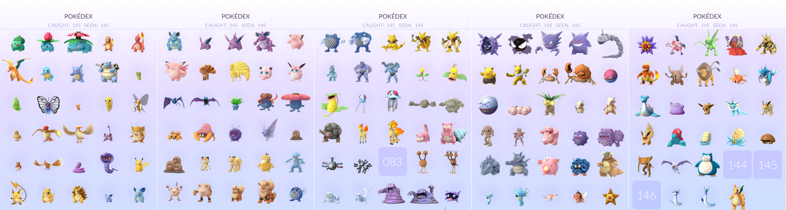
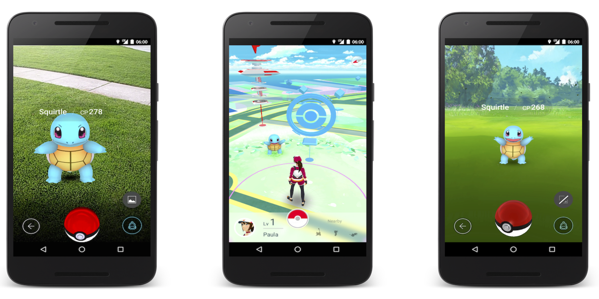
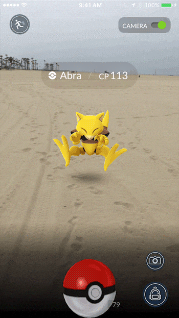
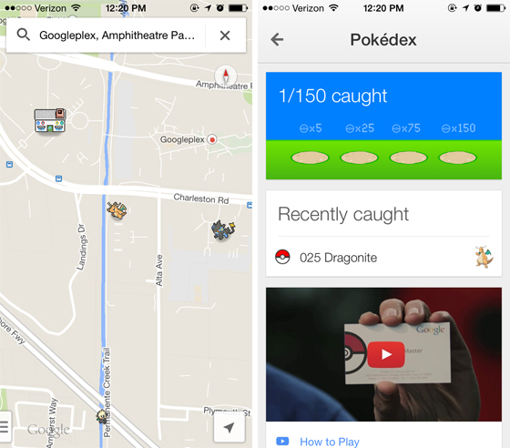
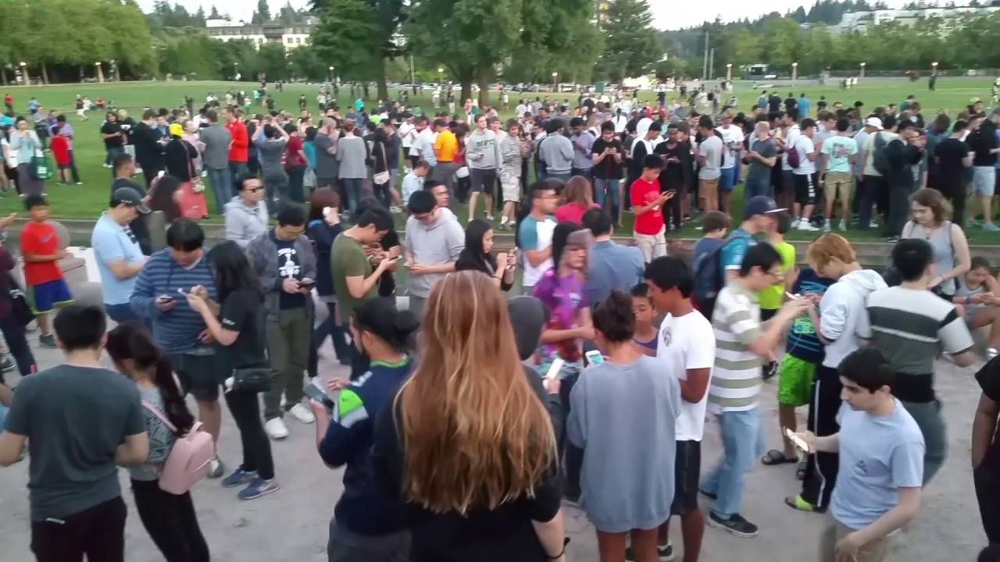

Pokémon Go
Introduction
Pokémon Go is an AR game developed and published by Niantic in collaboration with The Pokémon Company. It was released in 2016 for iOS and Android devices.
The game uses mobile devices equipped with GPS to locate, capture, train, and battle virtual Pokémon, which appear as if they were in the player's real-world location.
The game basically works like any other game in the Pokémon franchise, but with the addition of AR.
The game is free-to-play, but uses the freemium business model. It therefore supports in-app purchases for additional virtual items.
At launch, the game had the original 151 Pokémon available and as of 2020, that number has gone up to around 600.
|  |
| Gotta catch most of 'em. |
Gameplay
After establishing a game account, players create and customize their own avatars. Once created, an avatar is displayed on a map based on the player's geographical location. Features on the map include 'PokéStops' and 'Pokémon Gyms'. PokéStops can be used to collect items and Gyms serve as battle locations for team-based king of the hill matches.
As players move around in the real world, their avatar will move around the virtual map accordingly. Pokémon species tend to reside in different areas of the world that match their type. So Water-type Pokémon are generally found near water. During a Pokémon ecounter, the player may choose whether they want to view it AR mode or with a live rendered, generic background. The AR mode uses the camera and gyroscope on the player's smartphone to display an image of a Pokémon on the screen so that it appears it is in the real world.
|  |  |
| AR display, the map and avatar, and the generic backgound display. | Potential animal abuse. |
Unlike other games in the Pokemon franchise, the player doesn't have to fight a Pokémon to capture it. All you have to do is throw Pokeballs at it until you either catch it or it runs away. If the player manages to capture the Pokémon it will come under the ownership of the player.
The player can then choose to trade the Pokémon for candy (candy is used to upgrade Pokemon, each type has it's own specific candy).
This is just the base game, but Niantic has been adding new features on a regular basis.
Developement
The idea behind the game was conceived by Satoru Iwata of Nintendo and Tsunekazu Ishihara of The Pokémon Company in 2014. Initially it was just as an April Fools' Day collaboration with Google, called the Google Maps: Pokémon Challenge. Ishihara had seen the work done by Niantic on another transreality game called Ingress. He thought that the gameplay would work perfectly with the Pokémon franchise.
|  |
| April Fool's Day 2014. |
On March 4, 2016, Niantic announced an exclusive Japan beta test would begin soon, allowing players to try the game out and give feedback so as to refine the game before its full release. The beta test was later expanded to a few other countries before it came to an end June 30.
According to John Hanke in an interview with Business Insider, it was only in 2018 that Pokémon Go became the game that Niantic had initially envisioned.
Impact
The game has been referred to as a "social media phenomenon" which brought people together from all walks of life. Many media outlets referred to the sudden surge in interest for Pokémon "Pokémon Go Mania", or "Pokémania".
|  |
| Back when crowds were allowed. |
The game was also a catalyst to a surprising number of positive side effects that no one expected. For example, businesses profited from the presence of PokéStop around them, because of the increased influx of people, and the exploration of communities has allowed some light to be shed on local history.
The game is also credited for popularizing AR and is responsible for a huge resurgence in poularity for the Pokémon franchise as a whole. Many speculate that the future of video games will involve VR and AR.
Arthur Morgan